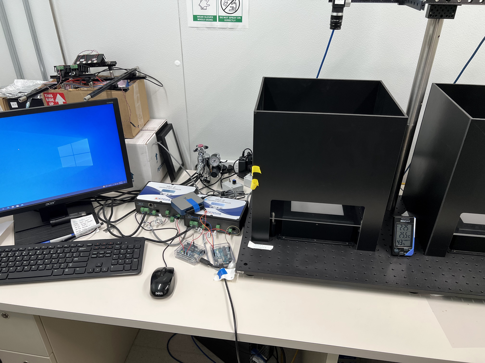

Joiner Lab Optogenetics Project
(In Progress)
Optogenetics in Drosophila
Joiner Lab conducts research on the molecular mechanisms and neural circuitry that control sleep need in fruit flies. The specificity of neural excitation through optogenetic techniques made optogenetics a viable option for the lab to utilize. I will be responsible for replicating the Arduino and LED configuration from Salk Institute for Biological Studies (seen below).
The Configuration
The optogenetics setup will require an Arduino UNO, a Metaphase LED controller, and the LED lights. The purpose of the Arduino UNO is to control the interval of time between each period of light exposure. A fairly simple program should be able to achieve this. Due to the heat created by the LED lights, an intensity of 0.1 to 0.5 W/mm^2 needs to be maintained with the Metaphase LED controller; however, it may be possible to control intensity through the Arduino with further research.